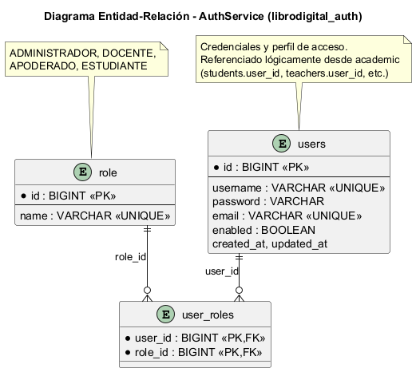
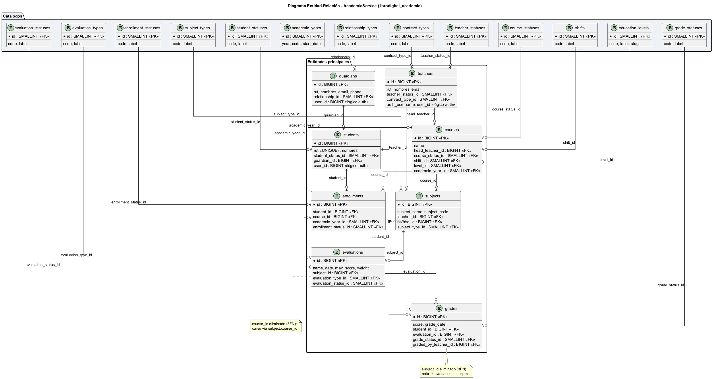
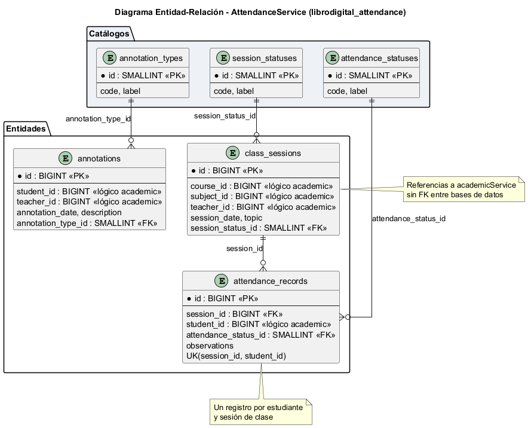

Proyecto: Plataforma Libro de Clases Digital
Asignatura: DSY1106 — Desarrollo Fullstack III
Evaluación: Parcial N°3 — Encargo
Equipo: Cristian Monsalve / Héctor Olivares
El proyecto adopta el patrón Database per Service: cada microservicio posee su propia base de datos PostgreSQL, gestionada de forma independiente. Esto garantiza:
No existen foreign keys entre bases distintas. Las relaciones cruzadas (por ejemplo, student_id en attendance que referencia un estudiante en academic) se resuelven mediante identificadores lógicos validados en la capa de servicio o vía llamadas REST.
| Base de datos | Microservicio | Puerto | Script DDL |
|---|---|---|---|
librodigital_auth |
authService | 8091 | infraestructura/ddl/auth_schema.sql |
librodigital_academic |
academicService | 8092 | infraestructura/ddl/academic_schema.sql |
librodigital_attendance |
attendanceService | 8093 | infraestructura/ddl/attendance_schema.sql |
Creación inicial de las tres bases:
-- infraestructura/ddl/00_create_databases.sql
CREATE DATABASE librodigital_auth;
CREATE DATABASE librodigital_academic;
CREATE DATABASE librodigital_attendance;
Cada servicio define su conexión en application.properties:
# Ejemplo authService
spring.datasource.url=jdbc:postgresql://localhost:5432/librodigital_auth
spring.datasource.username=postgres
spring.datasource.password=****
spring.jpa.hibernate.ddl-auto=update
spring.jpa.show-sql=false
spring.jpa.properties.hibernate.dialect=org.hibernate.dialect.PostgreSQLDialect
| Propiedad | Propósito |
|---|---|
spring.datasource.url |
URL JDBC a la BD del servicio |
spring.jpa.hibernate.ddl-auto=update |
Sincroniza esquema con entidades JPA en desarrollo |
PostgreSQLDialect |
Generación SQL compatible con PostgreSQL |
En producción se recomienda
ddl-auto=validatey aplicar cambios solo vía scripts versionados eninfraestructura/ddl/.
Controller (REST)
↓
Service / ServiceImpl ← lógica de negocio y validaciones
↓
Repository (JpaRepository) ← acceso a datos
↓
Entidad JPA (@Entity) ← mapeo objeto-relacional
↓
PostgreSQL
Ejemplo — authService:
@Entity
@Table(name = "users")
public class User {
@Id @GeneratedValue(strategy = GenerationType.IDENTITY)
private Long id;
private String username;
private String password; // BCrypt hash
@ManyToMany(fetch = FetchType.EAGER)
@JoinTable(name = "user_roles", ...)
private Set<Role> roles;
}
public interface UserRepository extends JpaRepository<User, Long> {
Optional<User> findByUsername(String username);
}
Spring Data JPA genera implementaciones automáticas de repositorios. Ventajas:
findByFirstName)@Transactional)@Mock UserRepository)
| Tabla | Descripción |
|---|---|
users |
Credenciales, email, estado activo |
role |
Catálogo de roles (ADMIN, DOCENTE, APODERADO, ESTUDIANTE) |
user_roles |
Relación N:M usuario ↔ rol |
Normalización: 3FN — los roles están en tabla separada; no hay redundancia de nombres de rol en users.

El esquema académico fue normalizado a Tercera Forma Normal (3FN):
Catálogos reemplazan columnas VARCHAR categóricas:
student_statuses, teacher_statuses, course_statuses, enrollment_statusesevaluation_types, evaluation_statuses, grade_statusesrelationship_types, contract_types, subject_types, shiftseducation_levels, academic_yearsEntidades principales con claves foráneas internas:
guardians, teachers, studentscourses, subjects, enrollmentsevaluations, gradesBeneficio de la normalización: elimina redundancia, garantiza integridad referencial dentro del dominio académico y facilita consultas por catálogo.

| Tabla | Descripción |
|---|---|
class_sessions |
Sesión de clase (fecha, curso, asignatura, docente — IDs lógicos) |
attendance_records |
Registro de asistencia por estudiante y sesión |
annotations |
Anotaciones de conducta vinculadas a estudiante/sesión |
Referencias lógicas cross-service:
| Campo en attendance | Referencia lógica | Servicio origen |
|---|---|---|
course_id |
Curso | academicService |
subject_id |
Asignatura | academicService |
teacher_id |
Docente | academicService |
student_id |
Estudiante | academicService |
Estos IDs se validan en la capa de servicio; no hay FK física hacia librodigital_academic.
Ubicación: infraestructura/ddl/
| Archivo | Uso |
|---|---|
00_create_databases.sql |
Crear las 3 bases |
auth_schema.sql |
Esquema completo auth + datos demo |
academic_schema.sql |
Esquema académico 3FN + catálogos + demo |
attendance_schema.sql |
Esquema asistencia + catálogos + demo |
migrations/001–004 |
Solo para actualizar BDs creadas con esquema antiguo |
Instalación nueva: ejecutar 00_create_databases.sql y luego cada *_schema.sql.
En esta etapa del proyecto no se utilizan procedimientos almacenados (SP). La persistencia se implementa íntegramente con:
Esta decisión prioriza la portabilidad del código Java y la coherencia con el patrón Repository de Spring.
@Transactional en la capa Service).student_id exista vía API o reglas de negocio)| Aspecto | Implementación |
|---|---|
| Contraseñas | Hash BCrypt en authService; nunca en texto plano |
| Tokens | JWT firmado; sin estado en servidor (stateless) |
| Exposición API | DTOs separados de entidades; no se serializan campos sensibles |
| Conexión BD | Credenciales en application.properties (variables de entorno en producción) |
Usuarios de prueba (auth):
| Usuario | Rol | Contraseña |
|---|---|---|
admin_colegio |
ADMIN | test1234 |
prof_castillo |
DOCENTE | test1234 |
apoderado_demo |
APODERADO | test1234 |
estudiante_demo |
ESTUDIANTE | test1234 |
Los scripts *_schema.sql incluyen registros demo para academic y attendance que permiten probar flujos completos sin carga manual.
La persistencia del sistema se implementa con JPA/Hibernate sobre PostgreSQL, siguiendo Database per Service y normalización 3FN en los dominios académico y de asistencia. Los scripts DDL en infraestructura/ddl/ documentan el esquema físico; las entidades JPA en cada microservicio mantienen la sincronización en desarrollo. Esta arquitectura garantiza separación de responsabilidades, integridad referencial intra-servicio y escalabilidad acorde a los requisitos del caso Libro Digital.